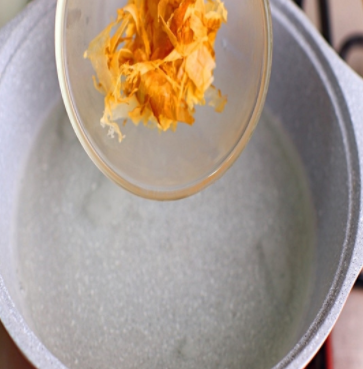
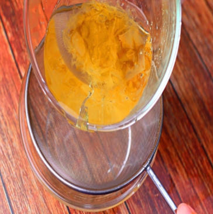
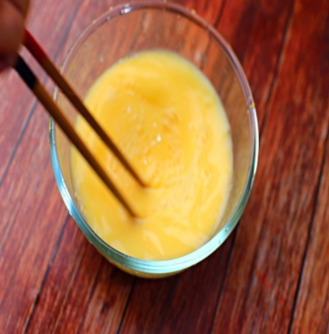
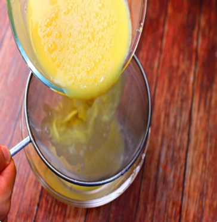
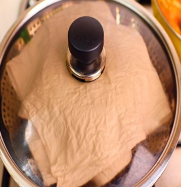

Japanese Food


재료 리스트
계란 3개 | 다시마小 2장 | 가쓰오부시 1줌 | 물 400ml | 소금 | 쯔유
레시피
1. 물 400ml에 다시마小 2장을 넣고 3분간 끓여주어 육수를 만들어주세요.
육수를 만들어 준 다음 불을 끄고 다시마를 제거한 뒤 가쓰오부시 한줌을 넣어 5분간
그대로 놔두어 주세요.

2. 5분이 지나면 체에 가쓰오부시를 걸러주고 냉장고에 넣어 미지근하게 식혀주세요.

3. 계란3개를 풀어서 계란물을 만들어주세요.

4. 식혀둔 육수에 계란물을 넣고 골고루 잘 섞어주세요.
이때 섞어놓은 계란물을 고운 체에 한번 걸러주면 찌꺼기와 알끈을 제거할 수 있습니다.

5. 체에 걸러준 계란물을 사기 그릇에 옮겨 담고 물을 넉넉하게 부어준 다음 찜기에 올려서 20분 간 쪄주면 됩니다..

일본식 계란찜 완성 !!